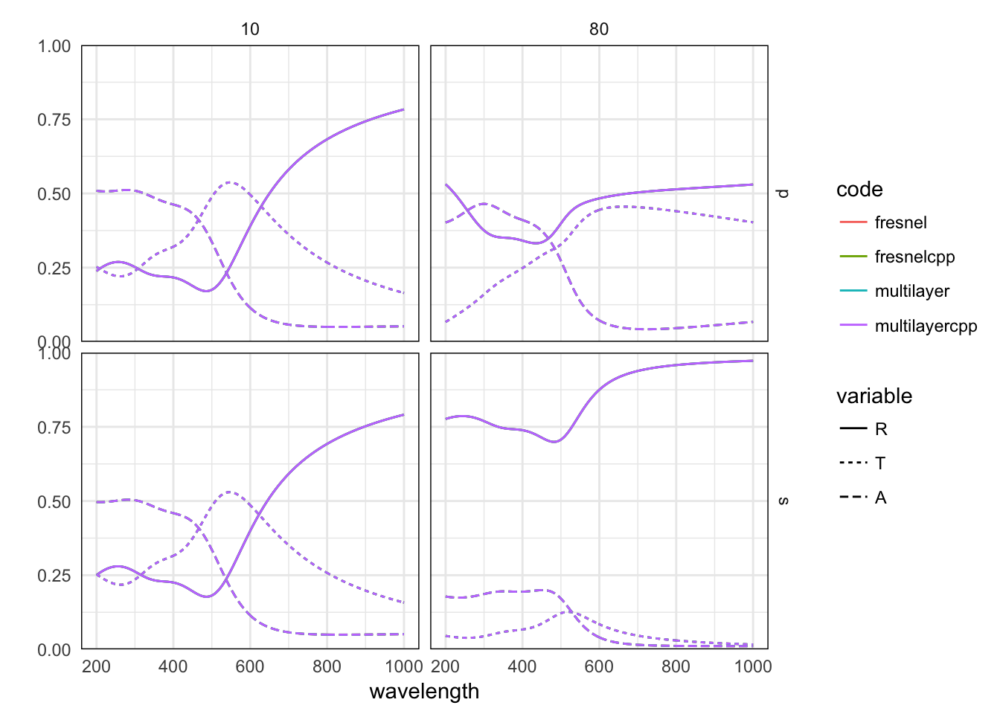

Two algorithms are available to calculate the reflection, transmission and absorption characteristics of a multilayer. Here we check the consistency of the results, using both the R and c++ implementations.
library(planar)
library(ggplot2)
library(plyr)
library(reshape2)
wvl <- seq(200, 1000,by=2)
gold <- epsAu(wvl)Simulation of the optical response of a thin gold film sandwiched between glass and water, with incidence at 20 degrees.
RTA_comparison <- function(angle = c(10,80),
epsilon=list(incident = 1.33^2, gold$epsilon,
1.5^2),
thickness=c(0, 20, 0), polarisation="p",
wavelength=gold$wavelength, ...){
angle_r <- angle*pi/180
res1 <- multilayer(wavelength, angle=angle_r, epsilon=epsilon,
thickness=thickness, polarisation=polarisation, ...)
res2 <- multilayercpp(wavelength, angle=angle_r, epsilon=epsilon,
thickness=thickness, ...)
res3 <- recursive_fresnel(wavelength, angle=angle_r, epsilon=epsilon,
thickness=thickness, polarisation=polarisation, ...)
res4 <- recursive_fresnelcpp(wavelength, angle=angle_r, epsilon=epsilon,
thickness=thickness, polarisation=polarisation, ...)
A1 <- as.vector(res1[["A"]])
A2 <- if(polarisation=="p") as.vector(res2[["Ap"]]) else as.vector(res2[["As"]])
A3 <- as.vector(res3[["A"]])
A4 <- as.vector(res4[["A"]])
R1 <- as.vector(res1[["R"]])
R2 <- if(polarisation=="p") as.vector(res2[["Rp"]]) else as.vector(res2[["Rs"]])
R3 <- as.vector(res3[["R"]])
R4 <- as.vector(res4[["R"]])
T1 <- as.vector(res1[["T"]])
T2 <- if(polarisation=="p") as.vector(res2[["Tp"]]) else as.vector(res2[["Ts"]])
T3 <- as.vector(res3[["T"]])
T4 <- as.vector(res4[["T"]])
common <- data.frame(wavelength=rep(wavelength, length(angle)),
angle=rep(angle, each=length(wavelength)))
all <- list("multilayer" = data.frame(A=A1, R=R1, T=T1, common),
"multilayercpp" = data.frame(A=A2, R=R2, T=T2, common),
"fresnel" = data.frame(A=A3, R=R3, T=T3, common),
"fresnelcpp" = data.frame(A=A4, R=R4, T=T4, common))
m <- melt(all, meas=c( "R", "T", "A"))
m
}
params <- expand.grid(polarisation=c("p","s"), stringsAsFactors=FALSE)
test <- mdply(params, RTA_comparison)
ggplot(test, aes(wavelength, value, colour=L1, linetype=variable,
group=interaction(L1,variable)))+
facet_grid(polarisation~angle) +
geom_line() +
scale_y_continuous(expand=c(0,0), lim=c(0,1)) +
labs(y="", colour="code", linetype="variable")